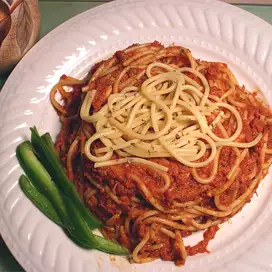

Spaghetti

A delicious recipe featuring spaghetti with corn beef. The steps for this recipe seems pretty easy and the portion size is just right with excellent presentation. This dish goes well with any vegetables or spice that you want to add with it. Based on the reviews this recipe has excellent taste and is easy to make :). Thank you to Lymari for showing the recipe to this and explaining the steps which I will list below.
One cup of spaghetti sauce
1 cube of chicken boullion
1 teaspoon of Italian seasoning
1/2 tablespoon of garlic powder (optional)
1/2 tablespoon dried mince onion (optional)
Step 1: Put boullion in boiling water. Break the spaghetti noodles in half and add it into the boiling water.
Step 2: Over medium heat empty can of corned beef on skillet. Add the spaghetti sauce with the beef and stir them together. After it will break apart and that's when you can add vegetables or any additional ingredients into the sauce.
Step 3: Once noodles are done drain them the water and mix the sauce.